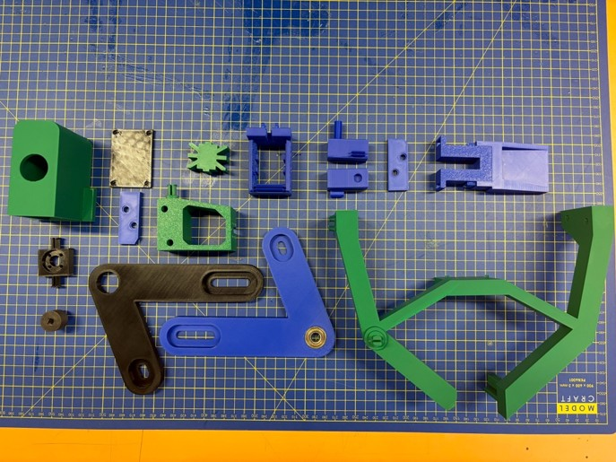
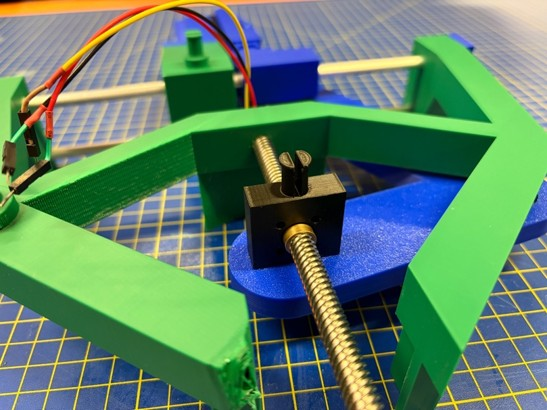
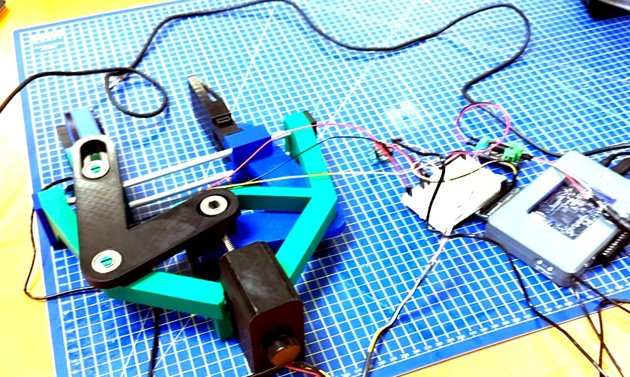
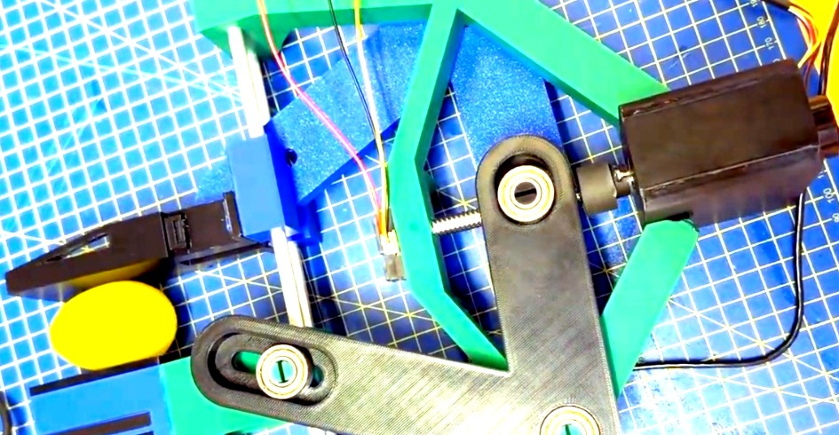

Projects → Project 01
Robotic Gripper - design, build & test
The project brief supplied the sensors/actuators and control hardware (a geared DC motor with encoder, a Sabertooth motor driver, a Sharp IR proximity sensor, a TAS606 load cell with amplifier, and an NI myRIO controller), and required a two-finger gripper to be designed around them. The force requirement had two sides to it: the mechanical linkage needed to be capable of supplying at least 50 N, whilst the control system had to make sure the applied force never exceeded 50 N (and stayed below 15 N when holding an egg). This page walks through how the mechanical design and control logic fit together, covering why we chose linear actuation over rotational jaws, a lead screw over a geared rack, PLA over tougher filaments, and force-threshold feedback over pure position control.
The numbers at a glance
| Grip force requirement (brief) | Capable of ≥ 50 N, never to apply > 50 N |
| Axial screw force available | 184.7 N at the lead nut (369.5 N total screw thrust) |
| Delivered finger force (after transmission) | 121.9 N closed → 164.8 N near full open |
| Applied force, as controlled | 15 N software threshold (13.4 N recorded on the egg) |
| Maximum jaw opening | 105 mm measured (95 mm modelled in CAD) |
| Lead-nut stroke | 36.5 mm |
| Full close time | 4.89 s calculated at 7.47 mm/s (7–8 s measured) |
| Transmission | 8 mm lead quad-start T8 screw, η ≈ 0.588 |
| Material | PLA, FDM printed (TPU jaw pad, PA-6 nylon coupler) |
The brief
The actuation and sensing hardware was provided by the university and the gripper had to be designed around those exact components. The force specification had two opposing requirements: the mechanism needed a mechanical capability of at least 50 N, however the system was prohibited from applying more than 50 N during operation. These two requirements were handled by separate parts of the system, with the lead-screw linkage providing the mechanical capability and the LabVIEW control logic enforcing the ceiling. Bonus marks were also available for novel mechanism designs not previously demonstrated in class. Overall, the project covered concept sketching, force/kinematic analysis, SolidWorks CAD modelling, 3D printing, wiring/soldering, sensor calibration in LabVIEW and Excel, PID tuning, and physical verification.
Meeting the 50 N capability requirement was straightforward due to the mechanical advantage of the 8 mm lead screw, which easily multiplied the motor torque into high axial thrust. Constraining the applied force on the egg was the harder part, as it required both characterising the variable force transmission through the bell-crank linkage and stopping the motor reliably using load-cell feedback. It was observed during testing that the raw load-cell signal had significant noise, therefore a moving-average smoothing filter was added in LabVIEW. This filter reduced responsiveness and added a slight delay, however it made a big difference in getting stable, usable force readings. We also lowered our target egg-gripping threshold from 20 N down to 15 N in order to minimise stress on the 3D-printed PLA arms while still holding the artificial egg securely.
Decision 1: linear actuation, not rotational
The first major decision was how the gripper jaws should move. We evaluated three mechanism families specifically around how they would interact with a curved, fragile egg shell:
| Option | Motion at the jaw | Assessment |
|---|---|---|
| Rotational (jaws pivot directly, scissor action) | Jaw tip sweeps an arc, so the contact normal rotates as it closes | Uses the fewest parts and is the simplest to print, however the jaw face rolls across the egg shell as it closes. This creates a tangential force component that tends to push or squeeze the egg out of the grasp and increases the moment arm. |
| Curvilinear (four-bar / parallel linkage) | Jaw stays roughly parallel while travelling along a shallow arc | Keeps the contact face flat against the egg, however it requires six or more printed pin joints. Because each printed joint needs ~0.2 mm of clearance, backlash and compliance stack up quickly, and the 4-bar layout was already the standard design used by most other groups. |
| Linear lead screw and nut driving symmetric bell-crank links (chosen) | Both fingers translate linearly along guide rods symmetrically about the centreline | The T8 lead screw converts 0.8 N·m of motor torque into 184.7 N per side (369.5 N total screw thrust) without needing a printed gearbox, purely due to the 8 mm lead. The trade-off is closing speed (4.89 s calculated for a full close), which is slower than a direct gear drive, however it guarantees parallel jaw contact. |
Decision 2: transmission
| Transmission | Behaviour | Why it was / wasn't chosen |
|---|---|---|
| Lead screw + brass flange nut (chosen) | High force multiplication, slower linear speed | The 8 mm lead converts the motor's 0.8 N·m torque into 184.7 N per finger linkage without a printed gear train, giving a safety margin of 2.44 above the 50 N requirement even at the weakest point in the stroke. The slower nut speed of 7.47 mm/s was an acceptable trade-off for fragile object handling. |
| Rack & pinion | Linear, symmetric, fast | Provides no inherent force multiplication without adding a multi-stage gearbox, which would reintroduce the 3D-printed gear teeth that the lead screw allowed us to avoid. |
| Spur gear train | Torque multiplication at the pivot | 3D-printed plastic gear teeth introduce backlash into the force path and wear down quickly under sustained clamping loads. |
| Cam / eccentric | Compact, high mechanical advantage over a short throw | The force-versus-angle curve is highly non-linear and sensitive to print tolerances, making the force transmission model harder to predict than a lead screw. |
| Belt or cable drive | Fast and lightweight | Tension-only (cannot actively push the jaws open without a return spring) and stretches over time, causing the calibrated force/position relationship to drift. |
Decision 3: material (PLA, TPU & PA-6 Nylon)
Almost all structural components were printed in PLA on a Bambu Lab FDM printer, with targeted material substitutions where the mechanical loads required it.
| Material | In its favour | Against |
|---|---|---|
| PLA (chosen for structure) | Stiffest and most dimensionally accurate of the standard filaments, which matters for the lead-nut housing and bearing press-fits, prints cleanly without an enclosure, and is cheap enough for rapid prototyping. | Brittle under impact/torsion, creeps under sustained long-term load, and softens above 55–60 °C. |
| PETG | More ductile than PLA and has better temperature resistance. | More prone to stringing and slightly less dimensionally crisp on small snap-fit clips and bearing seats. |
| ABS / ASA | Higher temperature resistance and toughness. | Warps and delaminates without a heated chamber, which was unnecessary for a room-temperature lab demonstration. |
| PA-6 Nylon (used for coupler) | High toughness and wear resistance under torsional stress. | Hygroscopic and more expensive, however it was ideal for reprinting the small high-stress motor-to-screw coupler after the initial PLA coupler sheared. |
To work around PLA's brittleness, parts were oriented flat on the print bed so that bending loads ran along the filament perimeters rather than across layer lines. We used 4 perimeter walls instead of relying on high infill, added 3 mm fillets at the finger roots, and fastened the brass lead nut into its block using four M3 screws rather than threading directly into plastic. It should be noted that those four M3 flange screws must be tightened evenly, because uneven preload tilts the brass nut and causes the lead screw to bind. The remaining joints used printed clip tabs, split pivot pins that click over the inner race of 608ZZ bearings, and push pins for mounting the IR sensor.
During initial testing, the original PLA lead-screw coupler failed because it carries the full 0.8 N·m motor torque directly into the T8 shaft, making it the highest-stress part in the assembly. Once the torque sheared along a layer boundary, we reprinted the coupler in PA-6 nylon, which solved the torsional failure. Additionally, the Finger 2 jaw pad plate was printed in flexible TPU right from the start so that the gripping face would conform slightly to the egg rather than applying a rigid point load.
Another physical issue encountered during testing was the motor mount cage, which lost its friction grip on the motor body after repeated operating cycles and allowed the motor to spin freely inside the housing. We considered printing a tighter replacement cage, however due to time constraints in the lab we applied a thick layer of superglue between the motor casing and the printed mount. This fixed the slip for the rest of our testing cycles, although a bolted flange mount or clamping collar would be much better for long-term reliability. A few of the 6 mm carriage guide-rod holes also needed reaming by hand so that the jaws could slide smoothly without sticking.
Decision 4: force-threshold feedback and PID position control
Integrating the mechanical hardware with the sensors/actuators in LabVIEW came down to four main subsystems:
- Sensing: a TAS606 load cell and amplifier to measure gripping force, the motor's quadrature encoder (0.044° per count) to track jaw position, and a Sharp GP2Y0A21YK0F IR proximity sensor to detect when an egg enters the 10–15 cm window.
- Actuation: the supplied 34:1 geared DC motor running at 56 rpm at the screw, driving the 8 mm lead screw and brass nut to move the two symmetric bell-crank arms.
- Control architecture: an NI myRIO-1900 running a single LabVIEW polling loop at 50 ms (20 Hz). Instead of a formal state machine, each 50 ms pass reads the sensors and selects the operating mode through a priority chain of Select blocks, keeping only the previous position error
e[k-1]and integral sum in shift registers. Jaw closing uses a discrete position PID controller with three tuning constants: Kp = 0.08, Ki = 0.0002, and Kd = 1.8, with the PID output clamped to ±1 V. Force control works as a threshold override (guarded move): as soon as the filtered load-cell reading exceeds the 15 N setpoint, the motor command is forced to the 2.5 V stop voltage. It is worth noting three side effects of this setup: there is no software latch (so if force relaxes below 15 N, the PID controller briefly re-engages and pulses the jaws), the 50 ms loop time plus filter lag causes a small contact force overshoot, and the integral term keeps accumulating up to ±2.2 whilst the force override is active. - Power & drive limits: a 9 V supply powers the Sabertooth 2x5 motor driver and DC motor, whilst the myRIO supplies 5 V to the sensors. The Sabertooth driver takes a 0–5 V analogue signal where 2.5 V stops the motor, and voltages above/below 2.5 V control speed and direction. In automatic mode, we clamped the command to 2.5 ± 1.0 V (40% of full speed) so that the jaws approached the egg gently, whereas manual mode allowed the full 0–5 V range. The Sabertooth 2x5 is rated for 5 A continuous (10 A peak) per channel, which gave plenty of headroom for our motor.
Pure position control on its own wouldn't work for this task because eggs vary in size, meaning a fixed encoder target that barely touches a small egg would crush a larger one. Using the load cell to trigger a stop based on contact force makes the system adapt to the object's diameter automatically.
Sensor calibration
Load cell: The amplified voltage from the TAS606 load cell was zeroed against a 0.069 V no-load tare reading, calibrated with known weights in Excel to find a slope of 85.354 kg/V, and multiplied by 9.8 m/s² in LabVIEW to output force in Newtons:
F = 9.8 × 85.3538 × (VLC − 0.069) ≈ 836.5 (VLC − 0.069)
This force signal was passed through LabVIEW's Filter Express VI (configured as a moving-average smoothing filter) before feeding into the threshold comparison. Without filtering, raw electrical noise spikes would have tripped the 15 N threshold early and stopped the jaws in mid-air. Although the moving-average filter added a slight delay that contributed to force overshoot on contact, it was a necessary trade-off in order to get clean, repeatable load-cell readings. Across our 0–20 N operating range, the linear fit tracked the calibration weights closely with minimal residual error.
IR distance sensor: Because triangulating IR rangefinders have a non-linear voltage-to-distance curve, we fitted an inverse-voltage equation to the Sharp sensor's output: d = 24 / VIR + 6×10⁻¹⁴ (where the 6×10⁻¹⁴ offset is just a tiny curve-fitting intercept). Egg detection is triggered when the distance sits strictly between 10 cm and 15 cm. The 15 cm upper limit ignores background clutter beyond the jaws, whilst the 10 cm lower limit avoids the close-range dead zone where triangulating IR sensors fold back and give ambiguous readings. If a wire comes loose and the sensor voltage drops toward 0 V, the calculated distance shoots to infinity, failing safe to a "no object" state.
Safety
A software Emergency Stop button was built into the LabVIEW front panel, which immediately sets the motor output to 2.5 V, exits the control loop, and runs the myRIO Reset VI. We also included a manual Force Stop toggle on the UI that forces the 2.5 V stop command at any time, and capped automatic closing speed to 40% of the driver's range. From a mechanical standpoint, the two main hazards are the pinch point between the closing jaws and the fact that the T8 lead screw and 34:1 gearbox hold their clamping force even when power is switched off. Because of this self-locking behaviour, the jaws shouldn't be forced apart by hand, and are instead opened using Manual Mode in LabVIEW or by turning the lead screw shaft directly. All workshop construction and testing followed standard RMIT lab safety rules, including wearing safety glasses, closed-toe shoes, and keeping hands/loose items clear of the lead screw and bell-crank linkages while powered.
Design calculations
Before printing the final parts, we needed to check four key things: how much axial thrust the lead screw generates, how that force transfers through the bell-crank linkage as the angles change, whether the force at the fingertips stays above the 50 N requirement throughout the stroke, and how long the jaws take to close.
1 · Axial force from the lead screw
Using standard power-screw mechanics (Budynas & Nisbett 2020), the axial thrust produced by input torque T, screw lead L, and screw efficiency η is:
Fscrew = 2π · η · T / L = 2π × 0.588 × 0.8 / 0.008 = 369.45 N total (184.7 N per finger link)
| Quantity | Value | Source / note |
|---|---|---|
| Motor torque T | 0.8 N·m | Rated output of the supplied 34:1 Pololu geared DC motor |
| Motor speed N | 56 rpm | Direct drive at the lead screw (no extra gear stage) |
| Screw lead L | 8 mm (0.008 m) | Quad-start T8 screw (2 mm pitch × 4 starts, advancing 8 mm per revolution rather than 2 mm, which we corrected after preliminary report feedback) |
| Screw efficiency η | 0.588 | Calculated from thread geometry assuming steel-on-bronze friction μ = 0.19, lead angle α = arctan(8 / (8π)) ≈ 14.324°, and friction angle φ = arctan(0.19) ≈ 10.758°, giving η = tan(α) / tan(α + φ) ≈ 0.588 |
| Base offset (closed datum) | 30.27 mm | Nut-to-base datum distance when the jaws are fully closed |
| Axial force per arm | 184.7 N | Half of the 369.45 N total axial nut thrust (369.5 N combined across both symmetric jaws) |
It should be noted that the friction coefficient (μ = 0.19) and resulting screw efficiency (η ≈ 0.588) carry most of the uncertainty in this calculation. Whilst motor torque, lead, and link dimensions are known accurately, estimating that ~41% of the input work is lost to thread friction is theoretical, and revising our initial 2 mm pitch vs 8 mm lead mix-up from the preliminary report updated both our force numbers and our closing time.
2 · Force transfer through the bell-crank linkage
As the brass nut travels linearly along the T8 screw, it pushes/pulls the slotted bell-crank arms around their fixed 608ZZ pivot bearings, which in turn slide the jaw carriages along the 6 mm aluminium guide rods. Because the bell-crank angle changes continuously over the stroke, the mechanical advantage between the nut and the fingertips varies with jaw opening. Taking the fully closed position as our datum (30.27 mm base offset), a full 95 mm jaw opening requires 36.5 mm of axial nut travel.
x = dscrew − 30.27 mm (axial nut offset from closed)
Ftip = Farm × (Δxnut / Δyfinger)
We evaluated this force transmission in two ways in our report: first by measuring the incremental nut travel (Δx) versus unilateral finger movement (Δy) directly from the SolidWorks assembly in 5 mm steps inside Excel, and second by deriving the exact analytical virtual-work ratio q = d(opening)/dyN = 2(yJ − yP)a / (r1² sin²φ) (which powers the interactive simulator embedded in Tab 3). As can be seen in the table below, the mechanical advantage is lowest when the jaws are nearly closed (121.9 N per finger, or 243.8 N combined clamping force) and highest near full open (164.8 N per finger, or 329.6 N combined). That represents a 35% change in gripping force over the 36.5 mm nut stroke.
This curve highlights an important design point: because the egg is gripped near the closed end of the travel, the minimum force at the closed end governs whether we meet the 50 N capability requirement. Sizing the motor off the open-position force would have overestimated our safety margin by 35%.
| Jaw opening (mm) | Per finger from centre (mm) | Nut travel x (mm) | Force per finger (N) | Combined clamping force (N) |
|---|---|---|---|---|
| 90 | 45.0 | 34.27 | 164.78 | 329.55 |
| 75 | 37.5 | 27.81 | 156.65 | 313.29 |
| 50 | 25.0 | 17.77 | 143.35 | 286.69 |
| 25 | 12.5 | 8.53 | 132.26 | 264.53 |
| 0 (closed) | 0 | 0 | 121.92 | 243.84 |
Note: In our group report's Excel table, the column labelled "Fapplied overall" (ranging from 329.55 N down to 243.84 N) applies the full 369.45 N screw thrust to the unilateral finger ratio (which equals the combined inward clamping force from both jaws), whereas dividing equally between the two symmetric arms gives 164.78 N down to 121.92 N per individual finger. Both columns are shown here for clarity.
Full stroke table: all 20 steps from the Excel model
| Opening (mm) | Per finger y (mm) | Screw to base (mm) | Nut travel x (mm) | F per finger (N) | F combined (N) | Step time (s) |
|---|---|---|---|---|---|---|
| 95 | 47.5 | 66.77 | 36.50 | - | - | 0.30 |
| 90 | 45.0 | 64.54 | 34.27 | 164.78 | 329.55 | 0.29 |
| 85 | 42.5 | 62.35 | 32.08 | 161.82 | 323.64 | 0.29 |
| 80 | 40.0 | 60.20 | 29.93 | 158.86 | 317.73 | 0.28 |
| 75 | 37.5 | 58.08 | 27.81 | 156.65 | 313.29 | 0.28 |
| 70 | 35.0 | 56.00 | 25.73 | 153.69 | 307.38 | 0.27 |
| 65 | 32.5 | 53.96 | 23.69 | 150.74 | 301.47 | 0.27 |
| 60 | 30.0 | 51.95 | 21.68 | 148.52 | 297.04 | 0.26 |
| 55 | 27.5 | 49.98 | 19.71 | 145.56 | 291.13 | 0.26 |
| 50 | 25.0 | 48.04 | 17.77 | 143.35 | 286.69 | 0.26 |
| 45 | 22.5 | 46.13 | 15.86 | 141.13 | 282.26 | 0.25 |
| 40 | 20.0 | 44.25 | 13.98 | 138.91 | 277.83 | 0.25 |
| 35 | 17.5 | 42.40 | 12.13 | 136.70 | 273.39 | 0.24 |
| 30 | 15.0 | 40.59 | 10.32 | 133.74 | 267.48 | 0.24 |
| 25 | 12.5 | 38.80 | 8.53 | 132.26 | 264.53 | 0.24 |
| 20 | 10.0 | 37.04 | 6.77 | 130.05 | 260.09 | 0.23 |
| 15 | 7.5 | 35.31 | 5.04 | 127.83 | 255.66 | 0.23 |
| 10 | 5.0 | 33.60 | 3.33 | 126.35 | 252.70 | 0.23 |
| 5 | 2.5 | 31.92 | 1.65 | 124.14 | 248.27 | 0.22 |
| 0 | 0 | 30.27 | 0 | 121.92 | 243.84 | - |
| Total calculated close time | 4.89 s | |||||
Step time is calculated using 60 × Δx / (RPM × Lead) for each 5 mm increment of jaw opening. Because the linkage is non-linear, equal steps at the jaw correspond to slightly smaller nut steps near the closed end, so the step time tapers from 0.30 s down to 0.22 s.
3 · Does it meet the brief?
Capability floor (mechanical)
Worst-case Ffinger = 121.9 N per jaw (243.8 N total) ≥ 50 N required
Margin = 121.9 / 50 = 2.44× per finger
Applied ceiling (control logic)
Software threshold = 15 N ≪ 50 N maximum limit
Measured on egg = 13.4 N
Both halves of the force specification are met: the lead-screw linkage satisfies the ≥ 50 N capability requirement with a 2.44× margin at the weakest point of the stroke, whilst the LabVIEW load-cell override keeps the applied force well below the 50 N ceiling (stopping at 13.4 N on the egg when set to a 15 N limit).
It can be observed from these numbers that the mechanical system is capable of delivering roughly 8 to 11 times the 15 N egg threshold (and in private testing we recorded over 60–80 N on the load cell graph before stopping the motor manually to avoid breaking the PLA arms). Because there is no mechanical slip clutch or spring limit in the drivetrain, protecting the egg relies completely on the load cell and LabVIEW loop catching the force rise within a 50 ms pass. Decoupling the mechanical capability from the software limit was a deliberate choice so that the same hardware could grip fragile items at 15 N or heavier objects up to 50 N just by changing the setpoint on the LabVIEW front panel.
4 · Actuation speed
vnut = N · L / 60 = 56 rpm × 8 mm / 60 = 7.47 mm/s
tclose = 36.5 mm / 7.47 mm/s = 4.89 s
A theoretical full-stroke closing time of 4.89 s is relatively slow, which is the direct trade-off of using an 8 mm lead screw for high force multiplication. During our physical tests, closing onto the egg took approximately 5 s, whilst travelling from fully open (105 mm) to fully closed took 7–8 s. This 7–8 s full-stroke time exceeded the 4.89 s theoretical calculation mainly because we clamped the automatic PID output to ±1.0 V (40% of the Sabertooth driver's 2.5 V range) to slow the approach and prevent the moving-average filter lag from causing a large force overshoot on contact. Friction in the guide rods and motor slowdown under load also contributed to the difference.
5 · Structural check
To make sure the 3D-printed PLA fingers wouldn't snap if the mechanism stalled against a rigid object, we checked the bending stress at the finger root under the worst-case open-end stall load of 164.8 N. Treating the finger as a cantilever beam with a 55 mm moment arm from the carriage bearing to the jaw tip, a nominal 15 mm × 20 mm rectangular root cross-section (section modulus Z ≈ 1000 mm³) experiences a peak bending moment of 9.06 N·m and a bending stress of roughly 9.1 MPa. Because the fingers were printed flat on the build plate, the tensile bending stresses run along the 4 continuous outer perimeter walls rather than pulling across layer lines. Using a conservative PLA yield strength of 30 MPa (knocked down from 45 MPa for 3D-printed anisotropy) gives a static factor of safety of 3.3 (and ~2.1 allowing for dynamic shock), which matched our private lab tests where the jaws survived 60–80 N loads without cracking.
Related calculator
I also built an interactive lead-screw calculator to test how thread pitch, number of starts, and friction coefficients affect efficiency and self-locking.
Calculated versus measured
| Parameter | Calculated | As built / measured |
|---|---|---|
| Grip force on egg | 121.9 N per finger capability | 13.4 N on the egg (stopped by the 15 N software override, with 60–80 N verified in private testing) |
| Grip force, near full open | 164.8 N per finger | Not tested to stall (to avoid over-stressing the PLA frame) |
| Maximum jaw opening | 95 mm | 105 mm |
| Nut stroke | 36.5 mm | ~40 mm (set manually to thread end) |
| Close time | 4.89 s (at 100% speed) | ~5 s onto egg, 7–8 s full stroke (at 40% voltage limit) |
| Screw efficiency | 0.588 (assumed μ = 0.19) | Consistent with 60–80 N proof tests, not stalled to limit |
It is worth noting that because our LabVIEW controller stops the motor as soon as the load cell hits 15 N during normal egg gripping, a standard demo run only tests the control threshold rather than the maximum mechanical thrust. However, during private testing in the lab (as can be seen in the LabVIEW load-cell graph reaching 60 N in our report), we verified that the mechanism easily surpasses the 50 N brief requirement before we manually stopped the test to protect the PLA parts.
From sketch to printed part
We developed three initial design concepts during the preliminary phase. The first concept used rotational geared jaws driven directly by a pinion, which we ruled out because the sweeping jaw arc would roll across the egg and push it out of the grasp. The second concept used a central pinion driving two opposing linear racks on guide rods, which gave parallel motion but lacked the force multiplication of a screw drive. The third concept used a T8 lead screw and brass nut driving two symmetric slotted bell-crank arms, which gave us both parallel jaw translation and high mechanical advantage. We carried this third layout into SolidWorks CAD and 3D printing with only minor adjustments: redesigning the nut block from a flanged oval to a square block with a circular recess to match the brass nut supplied in the lab, reprinting the failed PLA shaft coupler in PA-6 nylon, and printing the Finger 2 contact pad in flexible TPU.
Concept iterations


CAD model
The assembly is built around a 3D-printed main frame with two front uprights that hold a pair of parallel 6 mm aluminium guide rods, secured at the ends by snap-on caps. Both finger carriages slide along these aluminium rods so that jaw alignment is handled by metal shafts rather than printed sliding tracks. At the centre, the T8 lead screw threads through a nut block holding a brass flange nut (pressed into a counterbore and fastened with four M3 screws). Top and bottom split pins on the nut block each capture a 608ZZ ball bearing that rolls inside the short slot of a bell-crank arm, transferring force through rolling contact rather than plastic-on-plastic friction. One bell-crank arm mounts on top of the frame and the other mounts underneath in a mirrored layout so that both fingers move together symmetrically. The TAS606 load cell sits inside a printed housing clipped to the square Finger 2 jaw behind a flexible TPU pad plate and star insert, placing the sensor directly in the gripping force path, whilst the Sharp IR sensor clips onto the front face of the centre frame block.
All structural parts (main frame, upper/lower bell-crank arms, and finger carriages) were oriented flat on the build plate in SolidWorks so that bending loads ran along the XY filament paths. We added 3 mm fillets at internal corners and modelled ~0.20 mm radial clearance on the split pivot pins so the six 608ZZ bearings could click into place without splitting the plastic.


Interactive mechanism demonstration
As part of my personal portfolio extension for this project, I coded an interactive SVG kinematic/force tool to visualise how the bell-crank angles and virtual-work force ratio change across the nut stroke. You can drag the stroke and geometry sliders below to see how the lead-nut position drives the jaw opening and tip force in real time.
Manufacture & assembly
The gripper was manufactured across 15 printed parts on a Bambu Lab FDM printer. Twelve structural parts were printed in PLA for stiffness and cost efficiency, the Finger 2 grip pad was printed in TPU so it could flex against the egg, and the motor-to-lead-screw coupler was reprinted in PA-6 nylon after the initial PLA coupler sheared under torque. We sliced the structural PLA parts in Bambu Studio with a 0.20 mm layer height, 4 perimeter walls, and 20% gyroid infill. During physical assembly, a few of the 6 mm carriage rod holes were slightly tight off the printer and had to be reamed out by hand so the jaws would glide along the aluminium rods without binding.


Electronics and LabVIEW
The electronics were wired to the NI myRIO-1900 on Connector B: the Sharp IR sensor connects to analogue input B/AI1 (pin 5) via a soldered and heat-shrunk 3-wire JST extension lead, the amplified TAS606 load cell connects to B/AI0 (pin 3), the motor encoder A/B channels wire into the digital encoder inputs, and a single 0–5 V analogue command goes out on B/AO0 (pin 2) to the Sabertooth motor controller. Inside LabVIEW, a single polling loop runs every 50 ms and evaluates the operating mode in a fixed priority order: Emergency Stop or error status first, then Manual Mode override, then the 15 N load-cell force stop (sending 2.5 V), then the manual opening switch, and finally the automatic IR detection target (stepping from 0 to 120 encoder counts when an egg is detected between 10 cm and 15 cm).
Interestingly, the two problems that cost us the most debugging time in the lab were hardware issues that looked like software bugs on the LabVIEW front panel. First, the gripper stopped responding to the egg altogether and we spent several attempts checking our LabVIEW code before realising the original Sharp IR sensor had died, which was fixed immediately by swapping in a new sensor out of the box. This highlighted how important it is to test and verify each sensor/actuator independently before blaming the control logic. Second, the motor mount lost its friction fit on the motor body and started spinning freely inside the plastic cage, which we fixed for the final demonstration using workshop superglue.
The working gripper
Finished build


Test results
| Test | Target | Result | Pass |
|---|---|---|---|
| Egg detection (RE-1) | Peak on the IR chart within 10–15 cm range | Detected reliably and triggered closing sequence | Pass |
| Jaw opening (RE-2) | ≥ 100 mm | 105 mm measured | Pass |
| Gripping force regulation (RE-3) | 10–15 N under PID/override | 12.2 N held in initial test | Pass |
| Grip an egg without cracking (RE-5) | < 15 N, no shell damage | 13.4 N applied on egg, no damage | Pass |
| Hold whilst lifted and moved (RE-6) | No slip during pull test | Held securely through manual tug and lifting | Pass |
| Automatic close (RE-7) | Detect and grip unaided | Worked as intended | Pass |
| Automatic reopening (RE-8) | Return to zero once the egg is removed | Did not return automatically due to IR sensor detecting the closed jaws/crossbars | Fail |
| Manual control (RE-9) | Open and close from the LabVIEW front panel | Worked reliably | Pass |
| Emergency stop (RE-10) | All motion stops and code terminates | Stopped motor and terminated cleanly | Pass |
| Closing time (RE-4) | 4.89 s calculated | ~5 s onto egg, 7–8 s full stroke (due to 40% speed limit) | Fail |
| Repeatability | Consistent cycles without adjustment | ~10 consecutive cycles (reopening required manual input each time) | Partial |
The unresolved issue: automatic reopening
Automatic reopening did not operate reliably during the final demo. Whilst object detection, controlled closing, and holding worked across 10 consecutive cycles, removing the egg did not cause the jaws to automatically return to their open zero position, so we had to open the gripper manually through LabVIEW after each test. The lecturers reviewed our LabVIEW block diagram and confirmed that the reopening control logic itself worked properly, which pointed to a physical/optical cause: once the jaws are closed, the Sharp IR sensor's optical beam clips the inner edges of the gripper's own jaws and crossbars inside the 10–15 cm window. Because the sensor still sees the closed jaws as an object in range, the boolean condition never clears back to zero.
To fix this in a future iteration, we would move the IR sensor forward or angle it slightly upward out of the plane of the closing arms, and thin out the inner jaw profiles so they never cross the sensor's optical path.
Modelled 95 mm vs measured 105 mm opening
Our SolidWorks and Excel kinematic model predicted a 95 mm maximum jaw opening for 36.5 mm of nut travel, however the physical build opened to 105 mm (an extra 5 mm per finger). This difference came down to how we set the starting datum and clearance stack-up: before powering the system, we wound the lead screw by hand until the fingers were fully open against the end of the screw thread rather than stopping at a hard 36.5 mm mechanical stop. Combined with the 0.20 mm bearing clearances and the reamed 6 mm guide-rod holes, the unloaded jaws opened wider than the nominal CAD stroke, which actually helped us pass the ≥ 100 mm opening requirement (RE-2).
What I learnt
A safety margin depends on where in the stroke you check it: The bell-crank linkage delivers 164.8 N per finger near full open and 121.9 N when closed. Because the egg is gripped near the closed position, the 121.9 N figure governs our force capability (giving a 2.44× margin over 50 N, whereas checking at the open end would have given an optimistic 3.30× margin). Conversely, the 164.8 N open-end force governs the structural bending check on the PLA finger roots under stall.
Thread friction and lead vs pitch make a huge difference: Correcting our preliminary report error (where we initially used the 2 mm thread pitch instead of the 8 mm 4-start lead) quartered our theoretical screw force and sped up our calculated closing time by a factor of four. Alongside the 0.588 screw efficiency estimate, this showed how sensitive power-screw calculations are to getting the thread parameters right.
High mechanical advantage costs speed: Using an 8 mm lead screw gave us up to 369.5 N of axial nut thrust with zero printed gears and zero tooth backlash, however it meant a calculated full close took 4.89 s (and 7–8 s once we limited the motor voltage to 40% in LabVIEW). That trade-off worked well for gently gripping an egg, however a high-speed pick-and-place robot would need a steeper lead or a direct linkage.
Force feedback handles size variation, but filter lag causes overshoot: Closing until the load cell hits 15 N lets the gripper handle different egg sizes without crushing them. However, because we needed a moving-average filter to clean up load-cell noise over a 50 ms polling loop, we had to cap the motor drive voltage to 2.5 ± 1.0 V so that the jaws wouldn't overshoot the 15 N limit before the loop could stop the motor.
CAD and spreadsheet modelling go hand-in-hand: Every time we shifted a pivot or slot length in SolidWorks, the force transfer ratio across all 20 stroke steps changed. Building the parameterised Excel model and the interactive SVG gripper tool gave a solid understanding of how the linkage geometry and force transmission fit together.
What I would improve next
Relocate the IR sensor and slim down the inner jaw profile: Moving the Sharp IR sensor slightly forward or angling its line of sight away from the closing carriages would stop the jaws from triggering false self-detections when closed, allowing automatic reopening to work hands-free.
Replace the friction-fit motor cage and plastic coupler with metal hardware: Supergluing the motor into its printed cage worked as a quick lab fix, and reprinting the shaft coupler in PA-6 nylon solved the PLA shearing issue, however using M3 face-mount screws on the motor gearbox and an off-the-shelf aluminium clamping jaw coupler would make the drivetrain far more reliable.
Add a software latch and anti-windup in LabVIEW: Adding a boolean latch (or hysteresis deadband) once the 15 N threshold is reached, and freezing the PID integral sum whilst the force override is active, would stop the jaws from pulsing on the egg and eliminate the integral windup jump on release.
Downloads & links
Note: an early draft of our group table listed PET-G, however the physical build was printed in PLA, with the TPU jaw pad and PA-6 nylon coupler noted above.